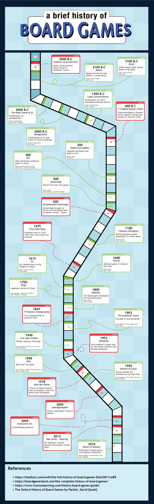

September 4, 2019
Project 1: Isometric Avatar

My idea for the design of the timeline is a board game path. The information is written in cards and separated between events and games. An event card describes something that happened in the board game history, and a game card describes when a game was first developed/released. Each game card has a brief description relating to the game, what type of game it is, and the origin of the game. If the game developer is known/applicable, the origin and name of the developer are written on the same line (to save space).
The history of board games is a very broad topic, so the timeline doesn’t go too specifically into any of the games. If I had more time to improve my design, I would add graphics and photos to liven the timeline more. I would also add a section at the bottom that describes the different types of games.
This is a pdf version of the file.